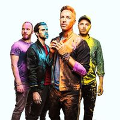

Coldplay

Coldplay er bresk rokkhljómsveit frá London. Hún samanstendur af söngvaranum og píanóleikaranum Chris Martin og gítarleikaranum Jonny Buckland, bassaleikarinn Guy Berryman, trommaranum Will Champion. Þeir fóru undir nafninu "Pectoralz", síðan breyttu þeir því í "Starfish" og síðan nefdu þeir hana "Coldplay" árið 1998. fyrstu plöturnar þeirra voru: "Safety" árið 1998, "Brothers & Sisters" og "The Blue Room" árið 1999 sem var fyrsta stóra platan þeirra.
Lagalisti
| Nafn | Albúm | lengd |
|---|---|---|
| Viva la Vida | Viva la Vida or Death and All His Friends | 4:03 |
| Paradise | Mylo Xyloto | 4:21 |
| Hymn For The Weekend | A Head Full of Dreams | 4:21 |
| A Sky Full of Stars | Ghost Stories | 4:14 |
| Something Just Like This | Memories...Do Not Open | 4:08 |